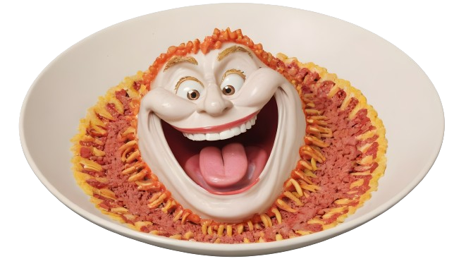

All Recipes
Recipe for a Laugh-Out-Loud Dish

The Chuckle-Churned Chortle Chowder
Behold, the alchemical masterpiece known as 'The Chuckle-Churned Chortle Chowder'! Gather 'round, ye seekers of mirth, as we embark on a culinary adventure guaranteed to tickle your taste buds and leave you rolling on the floor with laughter. Picture a cauldron bubbling with bubbling hilarity, each ingredient carefully selected to ignite the flames of amusement within your soul.
In this whimsical recipe, we blend the finest giggles, snickers, and puns with a dash of belly laughs and a sprinkle of wit. But beware, dear gastronomes, for this concoction is not for the faint of heart! Only those with a palate for the absurd and a thirst for humor need apply. So, preheat your comedic atmosphere, don your aprons of amusement, and let's churn up some chuckles! But remember, laughter is contagious, so share this dish with loved ones and brace yourselves for an uproarious feast of epic proportions.
Bon appétit, and may your belly be as full as your heart is light!
Ingredients:
- 1 cup of giggles (freshly harvested for optimal flavor)
- 2 tablespoons of snickers (the chuckle-inducing kind, not the chocolate bars)
- A pinch of puns (for that extra zest)
- 3 cups of belly laughs (preferably organically sourced)
- A dollop of absurdity (to keep things interesting)
- A sprinkle of wit (for added flavor)
Steps:
- Preheat your comedic atmosphere to a temperature of lightheartedness. Ensure there are no sourpusses lurking nearby.
- In a large cauldron of creativity, combine the giggles and snickers. Stir gently to avoid spilling any hilarity.
- Add a pinch of puns to the mix. Be careful not to overdo it, as too many puns can lead to groans instead of giggles.
- Gradually pour in the belly laughs, allowing them to infuse the concoction with hearty humor.
- Dollop in the absurdity. Embrace the weird and wonderful, as it adds a delightful twist to the dish.
- Sprinkle in the wit, ensuring that every bite is seasoned to perfection with cleverness and charm.
- Let the mixture simmer over a low flame of amusement, stirring occasionally to prevent any jokes from sticking to the bottom.
- Taste-test frequently, adjusting the seasoning as needed to achieve the perfect balance of comedy flavors.
- Once the chowder reaches a bubbling crescendo of hilarity, it's ready to serve. Ladle generous portions into bowls and garnish with a garnish of grins.
- Sit back, relax, and enjoy as your taste buds dance with delight and your funny bone gets a good workout.
Warning: Consumption of this dish may result in uncontrollable fits of laughter, side-splitting guffaws, and an overall uplift in mood. Enjoy responsibly, and share the laughter with friends and family for maximum enjoyment.